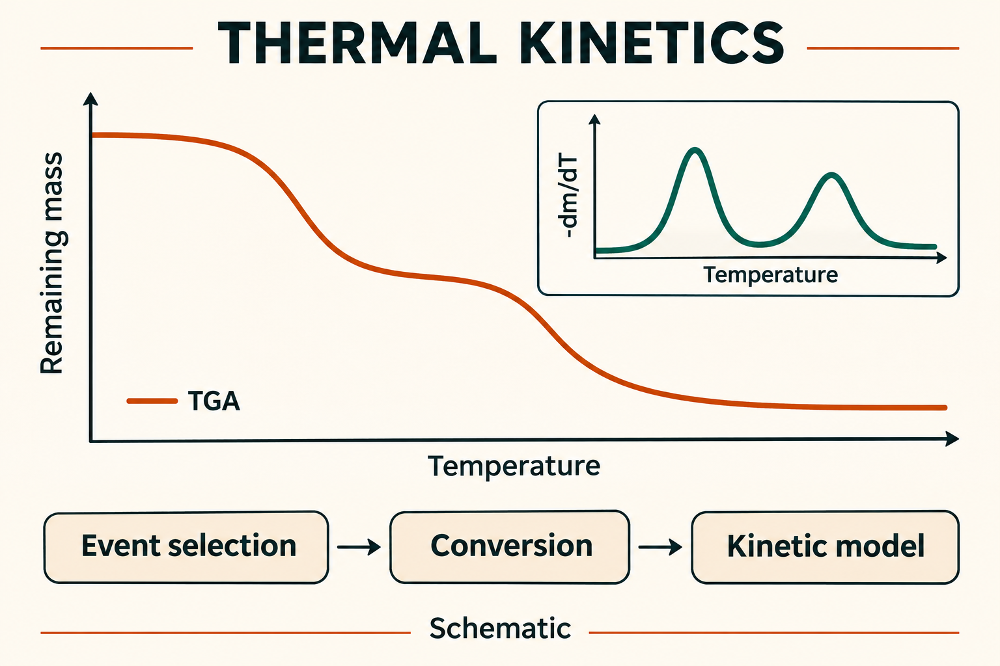
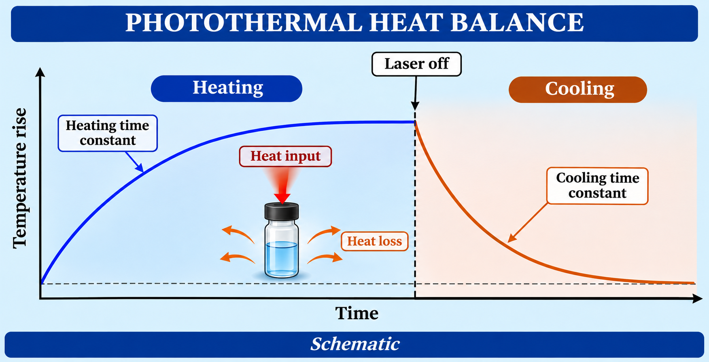

Kinetic treatments
Kissinger, Flynn–Wall–Ozawa, Kissinger–Akahira–Sunose, Starink, and Friedman formulations examine peak-temperature and conversion-dependent kinetics.
My thermal modelling connects mass-loss measurements, material descriptors, and temperature transients with physically defined kinetic and heat-transfer equations.
The framework covers event-specific conversion kinetics, effective thermal transport, and the energy-balance description of photothermal heating and cooling.

TGA records mass evolution with temperature. Derivative analysis helps locate thermal events, define conversion intervals, and separate processes before kinetic modelling.
Each selected event receives its own initial and final mass reference. This keeps distinct mass-loss processes from being treated automatically as one reaction.
Event mass fraction, onset temperature, DTG peak temperature, conversion-dependent apparent activation energy, and apparent kinetic parameters.
α: event conversion · m0 and mf: event boundary masses · β: heating rate · A: apparent pre-exponential factor · Ea: apparent activation energy · R: gas constant · T: absolute temperature.
Kissinger, Flynn–Wall–Ozawa, Kissinger–Akahira–Sunose, Starink, and Friedman formulations examine peak-temperature and conversion-dependent kinetics.
Effective reaction-order descriptions reconstruct selected conversion intervals. Fitted reaction order provides an operational description rather than uniquely establishing a reaction mechanism.
Gas-sorption descriptors supply geometric inputs to effective-medium calculations. Pore fraction and interface resistance connect accessible structure with an assumed thermal transport description.
φ: assumed-density pore fraction · av: volumetric interface area · ks and kf: solid- and pore-phase conductivity · Rint: interface resistance · aeff: thermal diffusivity · eeff: thermal effusivity.

The temperature transient is represented through an effective heat capacity and heat-loss conductance. Heating and cooling fits provide characteristic response times and support reference-corrected heat-input estimates.
The model assumes a representative system temperature, approximately constant effective properties, and an effective linear heat-loss term over the fitted interval.
Cth is the effective thermal capacity of the modelled system. H is the effective heat-loss conductance, and Qin is the heat-input rate.
The fitted amplitude ΔT∞ represents an extrapolated asymptotic rise. It is distinguished from the temperature actually reached at laser switch-off.
Experimental heating and cooling are fitted with separate time constants. Their agreement is assessed rather than imposed automatically.
This switch-off-based comparative estimator uses the water-calibrated heat-loss conductance and assumes compatible measurement geometry and heat-loss behavior. It is kept distinct from an equilibrium input estimate.
Integration uses a stated time interval, and mp denotes the dispersed material mass. These quantities describe different aspects of the transient response.